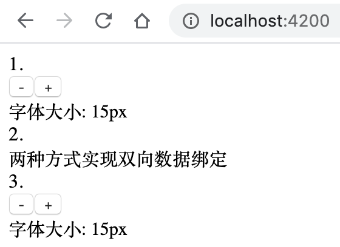

7 学习Angular模板知识¶
前面章节熟悉组件的过程中，我们已经接触了Angular的模板，并对模板做了初步介绍，本章主要介绍Angular模板的详细语法。Angular模板语法解释了模板语言的基本原理，并描述了如何在文档中使用这些语法。
7.1 Angular模板语言基础介绍¶
Angular模板语言是在Angular中编写组件模板时使用的语言。我们可以认为Angular模板语言是HTML的扩展，允许我们使用插值，Angular模板表达式和语句，数据绑定等。
要了解Angular模板语法，首先，我们将研究Angular模板表达式和语句。
7.2 掌握模板表达式和语句的基础使用¶
在数据绑定章节中，我们已经接触到了模板表达式和语句。模板表达式和语句本质上是从JavaScript表达式的子集派生来的，下表7-1汇总了Angular的常见模板表达式和语句的使用场景：
绑定类型 |
语法 |
输入类型 |
|---|---|---|
插值表达式 |
{{表达式}} |
如：{{firstName}} |
DOM属性绑定 |
[perperty]=”表达式” |
[src]=”imageURL”（类属性） |
HTML特性绑定 |
[attr.attribute]=”表达式” |
[attr.colspan]=“tableSpan” （类属性） |
单个Class样式绑定 |
[class.css-name]=”表达式” |
值为布尔类型，如[class.newclass]=”true” |
多个Class样式绑定 |
[class.css-names]=”表达式” |
值为字符串，如”my-class1 my-class2 my-class3”
值为{[key: string]: boolean}，如{foo: true, bar: false}
值为Array<string>，如[‘my-class1’, ‘my-class2’]
|
Style样式绑定 |
[style.css-property]=”表达式” |
[style.color]=”myColor” （类属性） |
事件绑定 |
(event)=”语句” |
(click)=”onChange()”（类方法） |
双向绑定 |
[(ngModel)]=”表达式” |
[(ngModel)]=”fg” |
内置属性型指令 |
[ngStyle]=”表达式” |
[ngStyle]=”{‘color’: fg, ‘padding’: ‘5px’}” |
内置属性型指令 |
[ngClass]=”表达式” |
[ngClass]=”classes” |
表7-1中的“表达式”就是模板表达式的简称，“语句”是模板语句的简称。
7.2.1 模板表达式的基础使用¶
Angular模板表达式在双花括号{{ }}中计算并返回一个值，并把它赋值给绑定目标的属性，这个绑定目标可能是HTML元素、组件或指令。 表达式的语法应该简单，遵循的准则是快速并且没有副作用。这是保证性能的关键，因为表达式会在更新期间周期性的计算该值。
表达式语法与JavaScript表达式非常相似，但是存在一些限制。下面列出了模板表达式有关语法示例，请参见表7-2。
运行状态 |
示例 |
说明 |
|---|---|---|
正常 |
{{variable}} |
基本绑定 |
正常 |
{{variable | pipe}} |
Angular pipe（管道） |
正常 |
{{varX + ‘’ + varY}} |
拼接字符串 |
正常 |
{{fistName}} |
绑定类属性 |
正常 |
{{Object.fistName}} |
绑定类对象的属性 |
正常 |
{{Object?.SubObject?.fistName}} |
问号运算符 |
正常 |
{{getProperty()}} |
访问类属性的get方法 |
不推荐 |
{{method()}} |
不报错，但避免method()方法副作用 |
不推荐 |
{{varX>1?varY:varZ|pipeX|pipeY}} |
不报错，但表达式太复杂了 |
报错 |
{{variableX;variableY}} |
表达式不完整，不是唯一值 |
报错 |
{{variable=10}} |
不能使用赋值语句 |
报错 |
{{variable++}} |
不支持++或 |
报错 |
{{variable|2}} |
不支持位运算，比如 | 和 & |
模板表达式不能引用全局命名空间中的对象，比如 window 或 document。它们也不能调用 console.log 或 Math.max。
7.2.2 模板表达式中有哪些运算符¶
Angular模板表达式的语言是JavaScript语言的子集，并为特定情况添加了一些特殊的运算符。接下来将介绍其中的三个运算符：管道运算符、安全导航运算符和非空断言运算符。
7.2.2.1 管道运算符¶
管道运算符的作用是对表达式的结果进行一些转换，如，将文本更改为大写，可以格式化日期显示，可以将数字显示为货币，或过滤列表并对其进行排序。
管道运算符的格式很简单，使用“|”符号分隔表达式和管道函数，它会把它左侧的表达式结果传给它右侧的管道函数。 下面通过示例代码说明管道运算符的运用：
小写：{{ "I love Angular and Java" | lowercase }} // 小写: i love angular and java 大写：{{ "I love Angular and Java" | uppercase }} // 大写: I LOVE ANGULAR AND JAVA 连续使用：{{ "I love Angular and Java" | lowercase | uppercase}} // 连续使用：I LOVE ANGULAR AND JAVA 百分比：{{ 0.5 | percent }} // 百分比: 50% 输出JSON：<p>This is test: {{item | json}}</p> 日期: {{ birthday | date }} // 日期: Apr 23, 2020 指定日期格式: {{ birthday | date:'yyyy-MM-dd' }} // 指定日期格式: 2020-08-23
关于更多的管道函数，本书后续章节有介绍。
7.2.2.2 安全导航运算符¶
Angular安全导航运算符也被称为“?”运算符，可以对在属性路径中出现null和undefined值进行保护。 Angular中通常存在空值问题，尤其是在模板表达式中。如果引用未初始化变量的属性，则可能导致模板表达式停止解析工作。例如，对象x的值为null，假设有代码：
Total {{x.totalAmt}} // 对象x的值为null
上述代码则会导致JavaScript报空异常错误，组件视图也将突然无法呈现。幸运的是，“?” 运算符能帮助我们。“?” 运算符是模板表达式中变量末尾的一个问号，如：
Total {{x?.totalAmt}}
上述代码模板表达式中的变量x后面紧跟着“?” 运算符，模板解析时，一旦发现该x变量为null，“?” 运算符就会告诉代码退出，留空。这将停止对属性的继续解析并绕过JavaScript的空异常错误。也可以在模板表达式中使用多个“?” 运算符。如：
Total {{x?.amt?.total}}
7.2.2.3 非空断言运算符¶
非空断言运算符是可选的，仅在打开严格空检查选项时必须使用它，目的是绕过类型检查。
如果类型检查器在运行期间无法确定一个变量是null或undefined，那么它也会抛出一个错误。我们自己可能知道它不会为空，但类型检查器不知道。所以我们要告诉类型检查器，它不会为空，这时就要用到非空断言运算符。
例如，在用*ngIf来检查过hero是已定义的之后，就可以断言hero属性一定是已定义的。
<!--判断hero是否存在--> <div *ngIf="hero"> The hero's name is {{hero!.name}} // 在打开严格空检查选项时，绕过类型检查 </div>
上述代码中，在打开严格空检查选项时，插值表达式如果使用{{hero.name}}，当遇到hero为空时，类型检查器在运行期间会抛出一个空值错误。这是因为，虽然我们在插值表达式之前做了非空判断，但是类型检查器不知道，因此这里需要加上非空断言运算符。
如果没有打开严格空检查选项，上述代码无论是否有非空断言运算符均是合格的。
7.2.3 模板语句的基础使用¶
当使用事件绑定时，用到了模板语句。模板语句也应该同表达式一样，保持简单的方式编写它们。语句是事件驱动的，事件通常会通过用户操作来更新状态或数据。 语句一般仅在绑定事件触发时运行，因此可以执行可能长时间运行的操作和任务。 与表达式相比，类似的规则适用于语句的语法，但有一些例外。在大多数情况下，我们只会在语句内部调用一个方法。下面列出了模板语句有关语法示例，请参见表7-3。
运行状态 |
示例 |
说明 |
|---|---|---|
正常 |
(event)=”updateValue()” |
正常调用方法 |
正常 |
(event)=”updateValue($event)” |
参数是Angular的模板变量$event |
正常 |
(event)=”updateValue(var.property)” |
参数是模板变量 |
正常 |
(event)=”updateValue();validate()” |
调用多个方法 |
正常 |
(event)=”var = 10” |
正常赋值 |
报错 |
(event)=”updateValue() | pipe” |
模板语句不能联合pipe管道使用 |
报错 |
(event)=”var++” |
不支持++或 |
模板表达式与语句使用时的注意点：
模板表达式与模板语句不同，不应执行复杂的逻辑，而应始终快速。
模板表达式可以联合管道（Angular Pipe）运算符来使用。模板语句可以使用分号（；）调用多个方法，但是不能使用Angular管道。
无论是模板表达式，还是模板语句都应该简单、简短和简洁。
7.3 什么是模板引用¶
模板引用是用来从模板视图中获取匹配的元素，这些元素可以是一个或多个。
7.3.1 使用模板引用变量¶
模板引用变量通常是对模板中DOM元素的引用。它还可以引用指令、组件等。 Angular使用井号（#）声明模板引用变量。
以下代码示例中，模板引用变量#phone会在<input>元素上声明了一个phone变量，然后在button元素的事件绑定方法中引用它。
<input #phone placeholder="phone number" /> <!--phone指的是<input>。按钮的单击事件将把这个<input> 的值传给<button>的callPhone()方法 --> <button (click)="callPhone(phone.value)">Call</button>
除了使用井号（#）声明模板引用变量，还有一种替代语法：用 ref- 前缀代替 #。如上面的#phone可以写成ref-phone，代码如下：
<input ref-phone placeholder="phone number" /> <!--phone指的是<input>。按钮的单击事件将把这个<input> 的值传给<button>的callPhone()方法 --> <button (click)="callPhone(phone.value)">Call</button>
模板引用变量引用的对象不同，因此也有各自对应的属性和方法。关于如何准确的获取这些属性和方法，这里有个小技巧：可以通过变量的constructor属性，获取模板引用变量的实际类型。如参照上面的示例：
<input #phone placeholder="phone number" /> {{phone.constructor.name}} // 打印模板引用变量的类型，这里显示：HTMLInputElement
上述示例中，通过{{phone.constructor.name}}获取模板引用变量phone的类型为HTMLInputElement，然后去搜索HTMLInputElement的方法和属性。
7.3.2 使用@ViewChild()装饰器¶
@ViewChild()是Angular提供的属性装饰器，用来从模板视图中获取匹配的元素，返回获取匹配的一个或首个元素。 使用时有个注意的地方：视图查询在组件的生命周期AfterViewInit发生时完成，因此在ngAfterViewInit()方法中，就能正确获取查询的元素。
下面示例演示使用@ViewChild()属性装饰器获取模板中的元素。
7.3.3 [示例 template-ex100] 使用@ViewChild()引用模板元素¶
用Angular CLI构建应用程序，具体命令如下：
ng new template-ex100 --minimal --interactive=false
启动服务，具体命令如下：
ng serve
查看应用程序结果。打开Web浏览器并浏览到 “http://localhost:4200”，应该看到文本 “Welcome to template-ex100!”。
编辑组件。编辑文件src/app/app.component.ts，并将其更改为以下内容：
import { Component, AfterViewInit, ViewChild, AfterContentInit, OnInit, ElementRef, AfterViewChecked } from '@angular/core'; @Component({ selector: 'app-root', template: ` <h1>Welcome to Angular World</h1> <p #title1>Hi {{ name }}</p> <p #title2>Hello {{ name }}</p> `, styles: [] }) export class AppComponent implements OnInit, AfterContentInit, AfterViewInit, AfterViewChecked { name: string = 'Murphy'; @ViewChild('title1', { static: false }) ctitle1: ElementRef; @ViewChild('title2', { static: true }) ctitle2: ElementRef; // 方法1 ngOnInit() { console.log('ctitle1 in ngOnInit : ' + this.getTitleValue(this.ctitle1)) console.log('ctitle2 in ngOnInit : ' + this.getTitleValue(this.ctitle2)) } // 方法2 ngAfterContentInit() { console.log('ctitle1 in ngAfterContentInit : ' + this.getTitleValue(this.ctitle1)) console.log('ctitle2 in ngAfterContentInit : ' + this.getTitleValue(this.ctitle2)) } // 方法3 ngAfterViewInit() { console.log('ctitle1 in ngAfterViewInit : ' + this.getTitleValue(this.ctitle1)) console.log('ctitle2 in ngAfterViewInit : ' + this.getTitleValue(this.ctitle2)) } // 方法4 ngAfterViewChecked() { console.log('ctitle1 in ngAfterViewChecked : ' + this.getTitleValue(this.ctitle1)) console.log('ctitle2 in ngAfterViewChecked : ' + this.getTitleValue(this.ctitle2)) } // 如果传入的元素为不为空，则输出该元素的文本内容 getTitleValue(v: ElementRef) { return v ? v.nativeElement.innerHTML : v } }
观察应用程序页面，进入开发者模式，控制台显示打印日志信息。如图7-1所示。
{kind=link}
图7-1 演示使用@ViewChild()属性装饰器
在上面的示例template-ex100中，完成了以下内容：
模板中定义了2个模板变量title1和title2，同时在类中也定义了2个类属性变量ctitle1和ctitle2，分别用@ViewChild()属性装饰器引用模板变量，注意分别使用了不同的static值；
模板中<p>标签的内容分别由静态字符串和动态插值表达式组成，Hello和Hi是静态字符串，而插值表达式{{name}}是动态的，它的值来自组件类中；
组件类一共实现了4个生命周期接口，分别在每个周期接口的回调方法中尝试获取类变量引用的信息，并且在控制台中分别打印；
4个生命周期接口的回调方法发生的顺序分别是：ngOnInit()方法1，ngAfterContentInit()方法2，ngAfterViewInit()()方法3，ngAfterViewChecked方法4。
无论static值为true和false，在组件的生命周期AfterViewInit发生时和之后，@ViewChild()属性装饰器都能获取到HTML元素中的内容，因此在方法3和方法4中能打印HTML元素中的内容；
当static值为true时，@ViewChild()属性装饰器可以获取HTML元素中的静态内容，因此在方法1和方法2中获取ctitle2的值为Hello；
当static值为false时，在组件的生命周期AfterViewInit发生前，@ViewChild()属性装饰器获取不到任何内容，因此在方法1和方法2中打印出ctitle1的值为undefined。
7.3.4 使用@ViewChildren()装饰器¶
@ViewChildren()也是Angular提供的属性装饰器，与@ViewChild()装饰器一样，用来从模板视图中获取匹配的元素，不同的是返回获取匹配的所有元素。
下面示例演示使用@ViewChildren()属性装饰器获取模板中的多个元素。
7.3.5 [示例 template-ex200] 使用@ViewChildren()引用多个模板元素¶
在[示例 template-ex100]的基础上，编辑组件。编辑文件src/app/app.component.ts，增加@ViewChildren()声明的属性变量：
@ViewChildren('title1, title2') ctitles: ElementRef[];同时别忘了在文件的import语句中添加导入ViewChildren对象，然后在方法4中，增加一行代码：
console.log('ctitles in ngAfterViewInit : ' + this.ctitles.length)
观察应用程序页面，进入开发者模式，控制台显示打印日志信息。如下所示：
ctitles in ngAfterViewInit : 2
在上面的示例template-ex200中，完成了以下内容：
在组件类中定义了@ViewChildren()属性装饰器声明的属性变量ctitles，它的类型是ElementRef对象数组；
@ViewChildren()属性装饰器和@ViewChild()属性装饰器一样，都是在组件的生命周期AfterViewInit发生时和之后，获取HTML元素中的内容，不同的是@ViewChildren()属性装饰器接收的可以是多个模板元素引用，以逗号分割；
在方法4中打印出@ViewChildren()属性装饰器选择的模板元素的个数。
7.4 Angular数据绑定知识总结¶
数据绑定借助模板表达式和语句，使Angular能动态的改变DOM属性的值，并能监听用户触发的事件，完成对应的业务逻辑。数据绑定按照数据流向分类有3种：源到视图（source-to-view），视图到源（view-to-source）以及源和视图的双向流动，在Angular中组件类提供源（数据源）。
7.4.1 单向属性绑定总结¶
Angular中的属性绑定就是源到视图（source-to-view）的单向数据绑定。从表7-1中可以看出，一共有5个直接关于属性绑定的场景，分别是[property]=“”、[attr.attribute]=“”、[class.css-name]=“”、[class.css-names]=“”和[style.css-property]=“”。
其实，插值表达式{{表达式}}也被归类为源到视图的单向数据绑定。 使用插值时，Angular会计算表达式并将插值结果绑定到元素属性。换句话说，Angular将插值转换为属性绑定。
请看下面的数据绑定代码，所有这3个示例都绑定到textContent属性并产生相同的结果。
1、<div>{{fisrtName}}</div> 2、<div [textContent]="{{fisrtName}}"></div> 3、<div textContent="{{fisrtName}}"></div>
属性绑定过程中，我们应该返回绑定属性（目标DOM属性）期望的类型。如下代码所示：
<!-- TypeScript / 自定义的组件，分别期望3种不同类型的输入参数 --> class CustomerComponent { @Input() name: string = "Default Value"; @Input() age: number = 14; @Input() account: Account; } <!-- HTML / 分别传入3种不同类型的参数 --> <customer-component [name]="stringValue" [age]="numberValue" [account]="accountObject"></customer-component>
总而言之，属性绑定后，每当源属性被更新时，对应的绑定视图将同步反映这些更新。
7.4.2 单向事件绑定总结¶
Angular中的事件绑定就是视图到源（view-to-source）的单向数据绑定。事件绑定将事件连接到语句，当用户在元素（视图目标）上触发操作时，它会在我们的组件类（数据源）中调用一个方法。
Angular提供了一个模板变量$event，引用的是DOM事件对象。在事件绑定中，可通过模板语句传递$event变量给类方法。$event变量包含有关事件的所有信息，也包括任何潜在的更新值。事件对象的类型取决于目标事件。如果目标事件是原生DOM元素事件，$event就是DOM事件对象，它有像target和target.value这样的属性。
关于$event变量的应用，下面列出常见的3种用法：
<!-- 访问模板变量 $event， $event.target.value返回当前控件（input）value属性的值--> 1、<input (change)="updateName($event.target.value)"> <!-- 与上面的结果一致。先声明一个模板变量#name，然后引用它的value属性的值 --> 2、<input #name (change)="updateName(name.value)"> <!-- 调用多个方法示例 --> 3、<input (keyUp)="updateName($event.target.value); validate()">
上述代码完成了以下内容：
示例1中通过解析模板变量$event的target.value属性值，并将其传值给类updateName()方法;
示例2中定义了模板变量，其指向当前input元素，然后通过引用模板变量的value值，并将其值传递给类updateName()方法，其效果与示例1相同，Angular推荐示例2的写法。
示例3演示了模板语句调用多个方法，方法间以分号(;)分隔。
7.4.3 双向数据绑定总结¶
双向数据绑定可以形象的表达为“视图到源到视图（View-to-Source-to-View）”，本质上是将属性绑定和事件绑定绑在一起的简写语法。 因此可以将双向绑定看成属性绑定和事件绑定的结合体。下面通过一段代码将上面学习的属性绑定和事件绑定的知识组合在一起，演示双向数据绑定。
<input [value]="username" (input)="username = $event.target.value"> <p>Hi {{username}}!</p>
上述代码具体做了下面几件事情：
[value]=”username”表示通过属性绑定username的值到value属性上；
(input)表示事件绑定，监听input事件；
$event是Angular提供的模板变量，引用DOM事件对象，通过$event.target.value可以获取当前input控件的value值，“username = $event.target.value”是一个表达式，负责将用户输入的值赋值给username变量；
代码中通过将属性绑定和事件绑定组合在一起，使模板和组件类共享username变量，用户输入值时，模板中通过插值{{username}}会实时看到结果。
其实，在Angular中，双向数据绑定模式在组件中是这样定义的：定义一个名为x的@Input输入变量，然后匹配一个名为xChange的@Output输出变量，如：
@Input() x: any; @Output() xChange: any;
也可以这么理解，该元素具有名为 x 的可设置属性和名为 xChange 的相应事件。
注意，它们的变量名称：x和xChange，其中的x仅是一个标识，可以替换为任何有效的变量名。
下面通过示例演示双向数据绑定的应用。
7.4.4 [示例 template-ex300] 演示双向数据绑定¶
用Angular CLI构建应用程序，具体命令如下：
ng new template-ex300 --minimal --interactive=false
启动服务，具体命令如下：
ng serve
查看应用程序结果。打开Web浏览器并浏览到 “http://localhost:4200”，应该看到文本 “Welcome to template-ex300!”。
新增子组件。具体命令如下：
ng g c two-way-binding --skipTests=true
编辑子组件。编辑文件src/app/two-way-binding/two-way-binding.component.ts，并将其更改为以下内容：
import { Component, OnInit, Input, Output, EventEmitter } from '@angular/core'; @Component({ selector: 'app-two-way-binding', templateUrl: './two-way-binding.component.html', styleUrls: ['./two-way-binding.component.css'] }) export class TwoWayBindingComponent { @Input() size: number; @Output() sizeChange = new EventEmitter<number>(); dec() { this.resize(-1); } // 减1操作 inc() { this.resize(+1); } // 加1操作 resize(delta: number) { // resize方法通过sizeChange发射size值 this.size = this.size + delta; this.sizeChange.emit(this.size); } }
编辑子组件的模板。编辑文件src/app/two-way-binding/two-way-binding.component.html，并将其更改为以下内容：
<div> <button (click)="dec()">-</button> <button (click)="inc()">+</button> <br/> <label [style.font-size.px]="size">字体大小: {{size}}px</label> </div>
编辑根组件。编辑文件src/app/app.component.ts，并将其更改为以下内容：
import { Component } from '@angular/core'; @Component({ selector: 'app-root', template: ` 1. <app-two-way-binding [(size)]="fontSizePx"></app-two-way-binding> 2. <div [style.font-size.px]="fontSizePx">两种方式实现双向数据绑定</div> 3. <app-two-way-binding [size]="fontSizePx" (sizeChange)="fontSizePx = $event"></app-two-way-binding> `, styles: [] }) export class AppComponent { fontSizePx = 15 // 初始化默认字体大小 }
观察应用程序页面，用户可以通过点击+或-按钮查看字体大小。如图7-2所示。
图7-2 通过点击+或-按钮查看字体大小
{kind=link}
通过示例template-ex300的演示，可以看出：
子组件（app-two-way-binding）的双向数据绑定遵循了命名规则：定义了名为 size 的可设置属性和名为 sizeChange 的相应事件；
根组件模板中单击按钮后，将会传递size值到子组件，然后带上调整后的大小发出 sizeChange 事件。
根组件模板中以2种方式实现双向数据绑定，其结果是一样的；
然而在现实应用中，没有哪个原生 HTML 元素会遵循 x 值和 xChange 事件的命名模式。Angular提供了NgModel内置指令实现将数据双向绑定添加到HTML表单元素。关于NgModel内置指令的使用我们已经在上一章的“双向数据绑定示例[示例 components-ex700]”中进行了讲解，在此不在赘述。
综上所述，实现双向数据绑定，我们已经展示了两大类3种实现方式：
- 属性绑定和事件绑定结合方式；
a、原生方式：<input [value]=”username” (input)=”username = $event.target.value”>
b、输入输出模式： x 值和 xChange 事件的命名模式
针对HTML表单元素的[{NgModel}]方式。
7.5 小结¶
本章首先介绍了Angular模板语言，模板表达式和语句，接着介绍了模板引用，最后对Angular的数据绑定进行了总结。